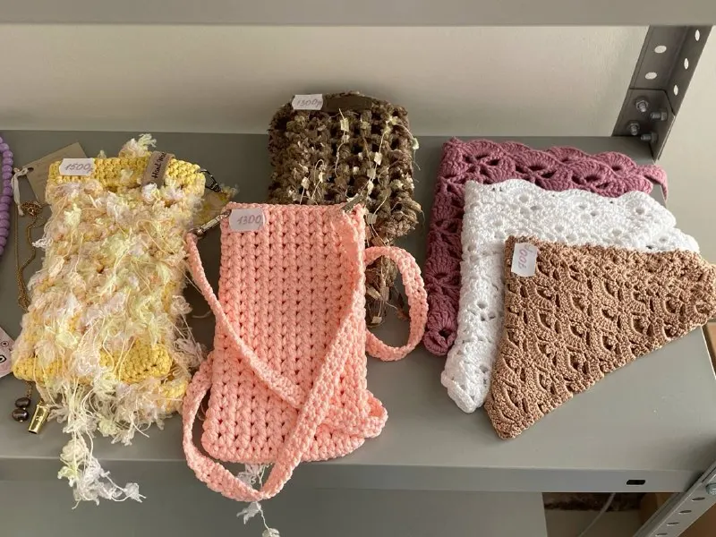
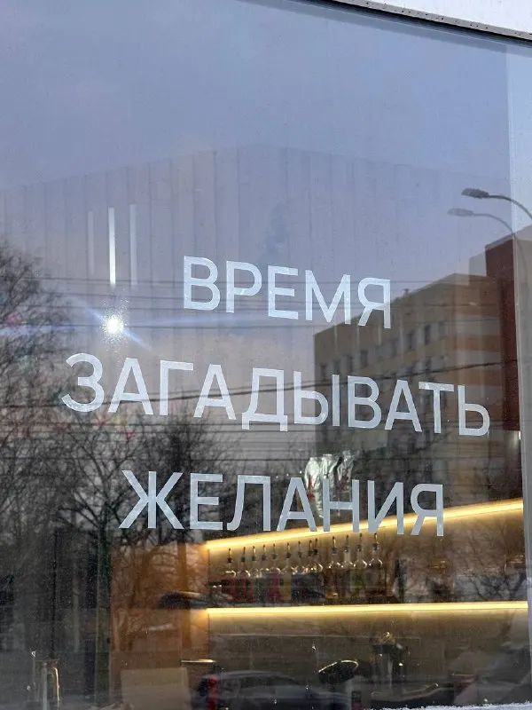
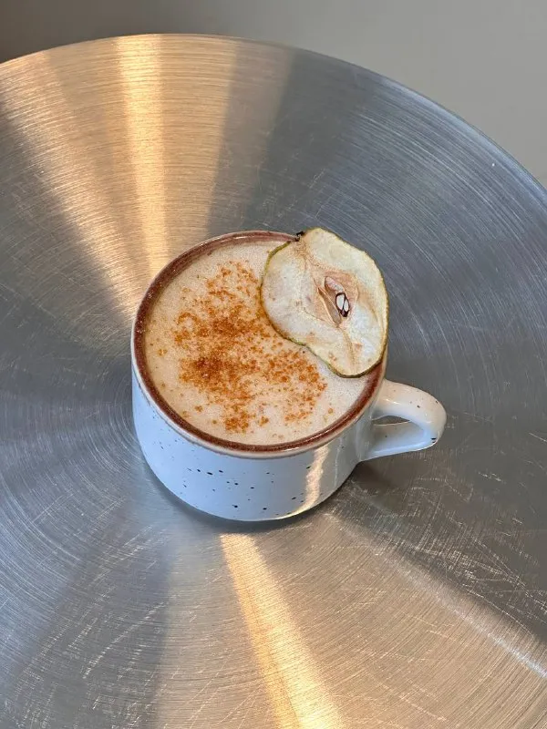

О кофейне
Маленькая. Светлая. Своя.
«К» — это кофейня на 15 мест, куда заходят за кофе, а остаются с книгой.


Книжная полка
Читайте, пока остывает кофе
Белые полки с книгами — одна из главных деталей зала. Берите любую книгу на время, пока сидите в кофейне. Хорошая книга и тёплая чашка — лучший способ переждать дождь.
Здесь удобно
Для кого «К»
Для тех, кто на бегу
Кофе с собой, круассан или сэндвич — быстро, перед работой или в обеденный перерыв.
Для тех, кто не спешит
Можно сесть с ноутбуком, поработать, встретиться с другом или почитать.
Для тех, кто с собакой
Питомцам у нас рады. Есть пандус и удобный вход для всех гостей.
Киоск ручной работы
Маленький маркет внутри
В «К» есть уютный мини-маркет вещей ручной работы: вязаные сумочки, украшения из бусин, стикерпаки. Полка пополняется к сезону — можно взять маленький подарок вместе с кофе.



Интерьер
Солнце, белый цвет и живые растения
Большие окна с буквой «К» на стекле, плетёные абажуры и много света. Гости часто называют кофейню фотогеничной — здесь красиво в любое время дня.
Больше фото в TelegramЗаходите
Московская, 30а — справа от «Магнита»
- Каждый день
- 8:00 — 19:00
- Остановка
- «Протезное предприятие», 1 минута пешком
- Оплата
- карта, наличные, QR-код